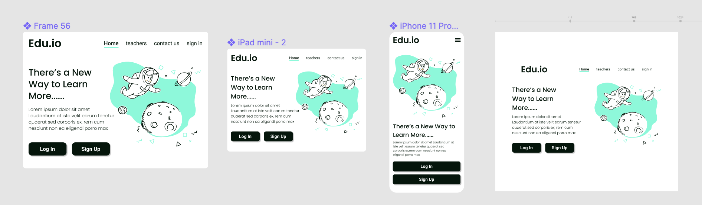

Лекция №8
Адаптивная вёрстка сайта позволяет веб-страницам автоматически подстраиваться под экраны планшетов и смартфонов.
Мобильный интернет-трафик растёт с каждым годом растёт, и, чтобы эффективно обрабатывать этот трафик, нужно предлагать пользователям адаптивные сайты с удобным интерфейсом.
Поисковые системы используют ряд критериев для оценки адаптивности сайта при просмотре на мобильных устройствах.
Google старается упростить пользование Интернетом для владельцев смартфонов и планшетов, отмечая в мобильной выдаче адаптированные под мобильные устройства сайты специальной пометкой mobile-friendly.
В Яндексе также работает алгоритм, который отдает предпочтение сайтам с мобильной/адаптивной версией для пользователей в мобильном поиске.
Проверить отображение страницы на мобильных устройствах можно на сервисах Яндекс.Вебмастер и Google Developers.
Responsive Design (RWD) — отзывчивый дизайн — проектирование сайта с определенными значениями свойств, например, гибкая сетка макета, которые позволяют одному макету работать на разных устройствах;
Adaptive Design (AWD) — адаптивный дизайн, или динамический показ — проектирование сайта с условиями, которые изменяются в зависимости от устройства, базируясь на нескольких макетах фиксированной ширины.
static - размер макета всегда фиксирован;liquid - размеры элементов указаны в процентах (плохо смотрится на мобильных устройствах);adaptive - макет перестраивается в некоторых ключевых значениях ширины страницы;responsitive - объединяет в себе liquid и adaptive.Cкладывается из трех важных частей
Гибкость макета базируется на использовании относительных единиц измерения вместо фиксированных пиксельных значений, что позволяет регулировать ширину в соответствии с доступным пространством.
Гибкость текстового содержимого достигается путем вычисления размеров шрифта относительно размера шрифта в
браузерах (по умолчанию 16px).
Например для фиксированного размера font-size: 42px относительный размер равен 42px / 16px =
2.625em.
Проблема гибких изображений решается с помощью правила
img {
width: 100%;
max-width: 100%;
}
Это правило гарантирует, что все изображения на странице никогда не будут шире, чем их контейнеры и никогда не превысят своих истинных размеров на больших экранах.
При проектировании интерфейса важно использовать такие шаблоны, которые отоносительно просто будет настраивать для разных размеров экрана.
Например, можно использовать так называемые карточные интерфейсы — прямоугольные фигуры с закруглёнными углами, которые представляют собой контейнеры для контента.
Большая часть макетов, используемых для создания отзывчивого веб-дизайна, относятся к одной из пяти категорий шаблонов, определенных Люком Вроблевски:
Оставьте только самое необходимое — хороший приём, особенно для отзывчивого дизайна. Создавайте отзывчивые и дружелюбные минималистические интерфейсы, которые приобретают всё большую популярность в настоящее время.
Расставьте приоритеты и правильно скройте контент — используйте скрытые элементы управления, особенно для устройств с небольшими экранами.
При создании адаптивных веб-страниц также необходимо обратить внимание на метатег viewport.
<head>
...
<meta name="viewport" content="width=device-width, initial-scale=1">
...
</head>
@media условие {
.element{
/* стили для элемента*/
}
}
Создание медиа-запроса начинается с ключевого слова @media после которого указывается одно или
несколько условий.
@media условие {
.element{
/* стили для элемента*/
}
}
В качестве условия можно указывать тип устройства или требования к определённой характеристике. Требование к определённой характеристике записывается в круглых скобках.
all – для всех;print – для принтеров и в режиме предварительного просмотра страницы перед печатью;screen – для устройств с экранами;speech – для программ чтения с экрана.
/* Например, этот @media только для экранов */
@media screen { ... }
/* А здесь для экранов и принтеров */
@media screen, print { ... }
Оператор and используется для объединения нескольких условий. В этом случае их результат будет истинным, когда каждое из них будет истинным.
@media screen and (min-width: 1200px) and
(orientation: landscape) {
/* что-то */
}
Применение стилей, когда необходимо лишь выполнение одного из указанных условий, достигается посредством
разделения их между собой с помощью , (запятой).
@media (min-width: 544px), (orientation: landscape) {
...
}
Ключевое слово not используется для отрицания. При использовании not с and отрицание работает для всего медиа-запроса.
@media not screen and (min-width: 411px)
and (min-height: 731px) {
/* что-то */
}
При использовании not в выражении с запятой он добавляет отрицание только для этой части.
@media not screen, not (min-width: 411px) {
...
}
Ключевое слово only предназначено для того, чтобы браузеры, которые не поддерживают CSS3
медиа-запросы их игнорировали.
В настоящее время это уже не актуально, поэтому использовать only не нужно (если конечно вы не
поддержиаете совсем старые браузеры).
При составлении условия кроме типов устройств и логических операторов можно ещё задавать требования к определённым характеристикам, которые должен иметь браузер, устройство вывода, или окружение. В некоторых источниках характеристики называют медиа-функциями.
Каждая характеристика в @media должна быть заключена в круглые скобки.
Медиа-характеристика width позволяет задать условие на равенство ширины области просмотра
определённому значению.
@media (width: 320px) {
...
}
Для определения диапазона можно использовать min-width и max-width. Например, @media
для ширины viewport от 576px до 1200px:
@media (min-width: 576px) and (max-width: 1199.98px) {
...
}
Для задания условий в отношении высоты viewport можно использовать height, min-height и max-height.
@media (min-height: 720px) {
...
}
С помощью orientation можно установить те или иные стили в зависимости от того, в каком режиме
(альбомном или портретном) отображается сайт.
@media (orientation: landscape) {
.cover { background: url(bg-l.png) no-repeat; }
}
С помощью orientation можно установить те или иные стили в зависимости от того, в каком режиме
(альбомном или портретном) отображается сайт.
@media (orientation: portrait) {
.cover { background: url(bg-p.png) no-repeat; }
}
Характеристики aspect-ration, min-aspect-ratio и max-aspect-ratio позволяют
задавать стили в зависимости от соотношения сторон viewport.
@media (min-aspect-ratio: 9/16) {
.header {
background-color: #0dcaf0;
}
}
Характеристики aspect-ration, min-aspect-ratio и max-aspect-ratio позволяют
задавать стили в зависимости от соотношения сторон viewport.
@media (max-aspect-ratio: 16/9) {
.header {
background: #ffc107;
}
}
Характеристики aspect-ration, min-aspect-ratio и max-aspect-ratio позволяют
задавать стили в зависимости от соотношения сторон viewport.
@media (aspect-ratio: 1/1) {
.header {
background: #6c757d;
}
}
Характеристики resolution, min-resolution и max-resolution можно
использовать, когда нужно задать стили в зависимости от плотности пикселей устройства.
/* Default */
p {
font-size: 16px;
}
/* Minimum resolution */
@media (min-resolution: 150dpi) {
p {
font-size: 14px;
}
}
При составлении медиазапросов нужно ориентироваться на так называемые переломные (от английского breakpoints) точки дизайна, т.е. такие значения ширины области просмотра, в которых дизайн сайта существенно меняется, например, появляется горизонтальная полоса прокрутки.
max-width вместо max-width при задании ширины
блока-контейнера
display: none;